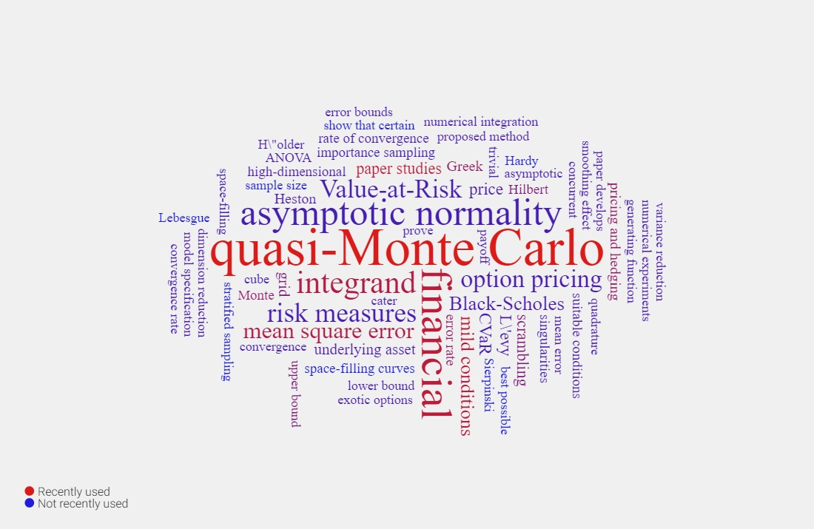

作者简介
何志坚，男，华南理工大学数学学院副教授、硕士生导师。清华大学统计学博士，华南理工大学数学与应用数学本科。研究兴趣为统计计算与建模、随机模拟方法及其应用、金融工程。相关研究发表在统计学和计算科学领域顶级期刊，如统计学四大期刊Journal of the Royal Statistical Society: Series B，计算科学顶级期刊SIAM Journal on Numerical Analysis，SIAM Journal on Scientific Computing和Mathematics of Computation。博士论文获得新世界数学奖银奖。曾获第十四届金融系统工程与工程管理国际年会(FSERM2016)优秀论文奖。
根据https://scimeter.org/clouds/提供的词云分析，我的研究关键字如下：

发表论文
Z. He and X. Wang. Good Path Generation Methods in Quasi-Monte Carlo for Pricing Financial Derivatives, SIAM Journal on Scientific Computing, 36 (2), B171-B197, 2014.
Z. He and X. Wang. On the Convergence Rate of Randomized Quasi-Monte Carlo for Discontinuous Functions, SIAM Journal on Numerical Analysis, 53 (5), 2488-2503, 2015.
Z. He and A. B. Owen. Extensible Grids: Uniform Sampling on a Space-Filling Curve,Journal of the Royal Statistical Society: Series B, 78 (4), 917-931, 2016.
C. Weng, X. Wang, and Z. He. An Auto-Realignment Method in Quasi-Monte Carlo for Pricing Financial Derivatives with Jump Structures,European Journal of Operational Research, 254 (1), 304-311, 2016.
C. Weng, X. Wang, and Z. He. Efficient Computation of Option Prices and Greeks by Quasi-Monte Carlo Method with Smoothing and Dimension reduction, SIAM Journal on Scientific Computing, 39 (2), B298-B322, 2017.
Z. He and A. B. Owen. Discussion of: ‘Sequential Quasi-Monte Carlo’ by M. Gerber and N. Chopin, Journal of the Royal Statistical Society: Series B, 77 (3), 563-564, 2015.
C. Schretter, Z. He, M. Gerber, N. Chopin, and H. Niederreiter. Van der Corput and Golden Ratio Sequences Along the Hilbert Space-Filling Curve,Proceedings of the MCQMC 2014 conference, R. Cools and D. Nuyens (Eds.), 531-544, 2016.
Z. He. Quasi-Monte Carlo for Discontinuous Integrands with Singularities along the Boundary of the Unit Cube. Mathematics of Computation, 87 (314), 2857-2870, 2018.
Z. He and L. Zhu. Asymptotic Normality of Extensible Grid Sampling.Statistics and Computing, 29 (1), 53-65, 2019.
F. Xie, Z. He, and X. Wang. An Importance Sampling-Based Smoothing Approach for Quasi-Monte Carlo Simulation of Barrier Options. European Journal of Operational Research, 274 (2), 759-772, 2019.
Z. He. On the Error Rate of Conditional Quasi-Monte Carlo for Discontinuous Functions. SIAM Journal on Numerical Analysis, 57(2), 854-874, 2019.